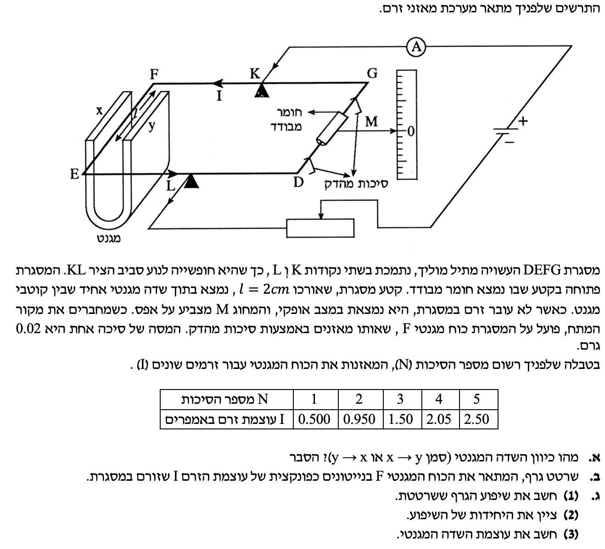

פתרון מודרך צעד-אחר-צעד עם דגש על כיוון כוחות, גרף וחישוב שדה.

נמיר את כל הנתונים למערכת היחידות התקנית (קילוגרם, מטר, שניות, אמפר):
👨🏫 הערת מורה: עבודה ללא המרת יחידות תוביל לשגיאות. השדה המגנטי (טסלה) מוגדר דרך קילוגרמים, מטרים ואמפרים.
מה מחפשים?
את כיוון השדה המגנטי בין הקטבים $$X$$ ל-$$y$$.ניתוח המערכת והכוחות:
כלל יד ימין (כוח לורנץ):
תשובה: כיוון השדה המגנטי הוא מ- $$y$$ ל- $$X$$.
מה נתון: המסגרת נמצאת במצב מאוזן (מצב התמדה / שיווי משקל) עבור כל מדידת זרם.
מה מחפשים: לחשב את הכוח המגנטי הפועל על המסגרת לכל מדידה, ולשרטט גרף.
נוסחאות מהדף:
הצבה ופתרון:
מכיוון שהמערכת במצב התמדה, על פי החוק הראשון של ניוטון, שקול הכוחות מתאפס. הכוח המגנטי ($$F$$), המוגדר בדף הנוסחאות כ-$$ F = I l B \sin \alpha $$, מושך את המסגרת מטה ושווה בגודלו לכוח הכובד ($$W$$) של הסיכות בצד השני (מתוך הנחה שזרועות המאזניים שוות):
נחשב את הכוח עבור כל סיכה אחת:
👨🏫 הערת מורה (חוקי גרפים): שרטטנו את הנקודות והוספנו קו מגמה ליניארי שחותך בראשית ($$0,0$$), כי כשאין זרם, הכוח המגנטי אפס.
חלק ($$1$$): חישוב שיפוע הגרף
👨🏫 הערת מורה (חישוב שיפוע): זכרו את חוק הברזל! כדי לחשב שיפוע, חובה לבחור שתי נקודות שנמצאות על קו המגמה, ולא בהכרח מתוך טבלת הנתונים. המטרה של קו המגמה היא למצע את כל המדידות (להחליק שגיאות), לכן אנחנו לא מחפשים נתונים מהטבלה אלא קוראים ערכים מהקו שסרטטנו. בנוסף, בחרו תמיד שתי נקודות שרחוקות מספיק אחת מהשנייה כדי להקטין את שגיאת הקריאה והחישוב.
לצורך החישוב, קראנו מהגרף שתי נקודות רחוקות המונחות על קו המגמה שלנו: הנקודה הראשונה $$ (0.50 , 2 \cdot 10^{-4}) $$ והנקודה השנייה $$ (2.50 , 10 \cdot 10^{-4}) $$. נציב אותן:
חלק ($$2$$) ו-($$3$$): חישוב $$B$$
הזווית ישרה ($$ \alpha = 90^\circ $$), ולכן $$ \sin(90^\circ) = 1 $$. משוואת הישר היא $$ F = (B \cdot l) \cdot I $$. לכן השיפוע שווה ל- $$ \text{slope} = B \cdot l $$.
👨🏫 הערת מורה: חישוב גודל פיזיקלי דרך שיפוע הגרף מקטין את שגיאת המדידה בהשוואה לחישוב מנקודה בודדת.
עוצמת השדה המגנטי היא $$ B = 0.02 \text{ [T]} $$.